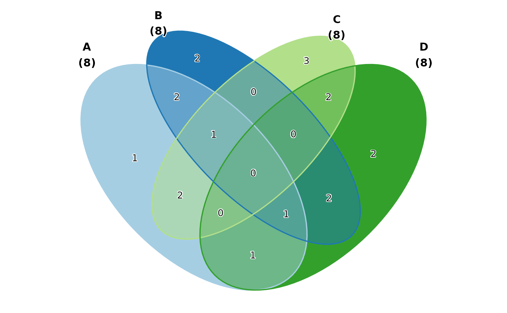
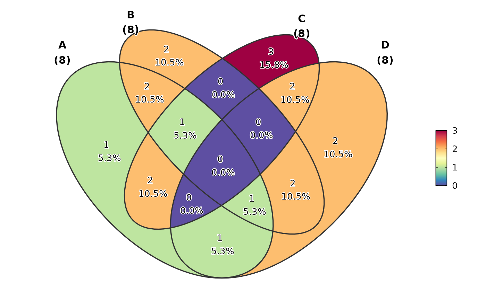
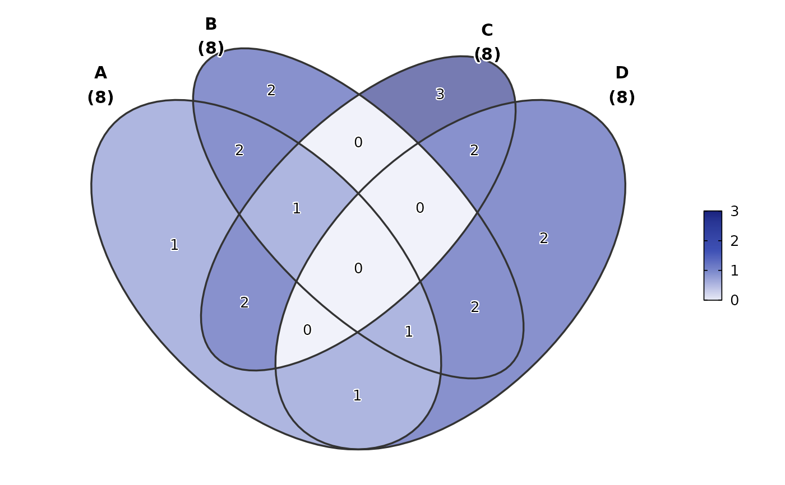

Create Venn diagrams to visualize overlaps between sets. Supports multiple input formats (long, wide, list) and various styling options.
Usage
VennDiagram(
data,
in_form = c("auto", "long", "wide", "list", "venn"),
split_by = NULL,
split_by_sep = "_",
group_by = NULL,
group_by_sep = "_",
id_by = NULL,
label = "count",
label_fg = "black",
label_size = NULL,
label_bg = "white",
label_bg_r = 0.1,
fill_mode = "count",
fill_name = NULL,
palette = ifelse(fill_mode == "set", "Paired", "Spectral"),
palcolor = NULL,
alpha = 1,
theme = "theme_ggforge",
theme_args = list(),
title = NULL,
subtitle = NULL,
legend.position = "right",
legend.direction = "vertical",
combine = TRUE,
nrow = NULL,
ncol = NULL,
byrow = TRUE,
seed = 8525,
axes = NULL,
axis_titles = NULL,
guides = NULL,
design = NULL,
...
)Arguments
- data
A data frame containing the data to plot
- in_form
Format of input data. One of:
"auto": Automatically detect format (default)
"long": Long format with group_by and id_by columns
"wide": Wide format with logical/0-1 columns
"list": Named list of character vectors
"venn": Pre-processed VennPlotData object
- split_by
Column name(s) to split data into multiple plots
- split_by_sep
Separator when concatenating multiple split_by columns
- group_by
Column(s) for grouping when in_form is "long" or "wide"
- group_by_sep
Separator for concatenating multiple group_by columns
- id_by
Column containing IDs when in_form is "long"
- label
Label style: "count", "percent", "both", "none", or a custom function
- label_fg
Color of label text
- label_size
Size of label text (default scaled by base_size)
- label_bg
Background color of labels
- label_bg_r
Radius of label background
- fill_mode
Fill coloring mode:
"count": Color by intersection count (continuous)
"set": Color by set membership (discrete, blended)
"count_rev": Reverse of count mode
- fill_name
Name for the fill legend
- palette
Color palette name
- palcolor
Custom colors for palette
- alpha
Transparency level (0-1)
- theme
Theme name (string) or theme function
- theme_args
List of arguments passed to theme function
- title
Plot title
- subtitle
Plot subtitle
- legend.position
Legend position: "none", "left", "right", "bottom", "top"
- legend.direction
Legend direction: "horizontal" or "vertical"
- combine
Whether to combine split plots into one
- nrow
Number of rows when combining plots
- ncol
Number of columns when combining plots
- byrow
Fill combined plots by row
- seed
Random seed for reproducibility
- axes
How to handle axes in combined plots ("keep", "collect", "collect_x", "collect_y")
- axis_titles
How to handle axis titles in combined plots
- guides
How to handle guides in combined plots ("collect", "keep", "auto")
- design
Custom layout design for combined plots
Examples
# \donttest{
set.seed(8525)
data <- list(
A = sort(sample(letters, 8)),
B = sort(sample(letters, 8)),
C = sort(sample(letters, 8)),
D = sort(sample(letters, 8))
)
VennDiagram(data)
VennDiagram(data, fill_mode = "set")

VennDiagram(data, label = "both")

VennDiagram(data, palette = "material-indigo", alpha = 0.6)

# }